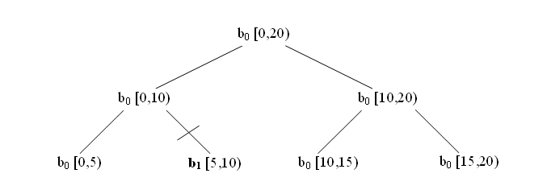

範囲のリダクションを計算します。
#include "tbb/parallel_reduce.h"
template<typename Range, typename Value,
typename Func, typename Reduction>
Value parallel_reduce( const Range& range, const Value& identity,
const Func& func, const Reduction& reduction,
[, partitioner[, task_group_context& group]] );
template<typename Range, typename Body>
void parallel_reduce( const Range& range, Body& body
[, partitioner[, task_group_context& group]] );
オプションの partitioner は、「パーティショナー」セクションのパーティショナー表の列 1 にある任意のパーティショナーを宣言します。
parallel_reduce テンプレートには 2 つの形式があります。関数形式は、簡単にラムダ式と組み合わせて使用できるように設計されています。命令形式は、データのコピーを最小限に抑えるように設計されています。
関数形式 parallel_reduce(range,identity,func,reduction) は、サブ範囲に func を適用し、2 項演算子 reduction を使用して結果をレデュースすることで、並列リダクションを行い、リダクションの結果を返します。func 引数と reduction 引数には、ラムダ式を指定することができます。以下の表は、identity、func、および reduction の型要件を要約したものです。
擬似署名 |
意味 |
|---|---|
Value Identity |
Func::operator() の左単位元。 |
Value Func::operator()(const Range& range, const Value& x) |
初期値 x から開始して、サブ範囲の結果を累積します。 |
Value Reduction::operator()(const Value& x, const Value& y) |
結果 x と y を組み合わせます。 |
命令形式 parallel_reduce(range,body) は、range の各値について body の並列リダクションを行います。Range 型は、Range コンセプトをモデル化しなければなりません。ボディーは、以下の表の要件をモデル化しなければなりません。
擬似署名 |
意味 |
|---|---|
Body::Body( Body&, split ) |
分割コンストラクター。operator() および join メソッドと同時に実行できなければなりません。 |
Body::~Body() |
デストラクター。 |
void Body::operator()(const Range& range) |
サブ範囲の結果を累積します。 |
void Body::join( Body& rhs ) |
結果を結合します。rhs の結果は this の結果にマージしてください。 |
parallel_reduce は、is_divisible() が各サブ範囲で false になるポイントまで、範囲をサブ範囲に再帰的に分割します。parallel_reduce は、分割コンストラクターを使用して各スレッドのボディーの 1 つ以上のコピーを構築します。ボディーの operator() または join メソッドが同時に実行している間、ボディーをコピーします。プログラマーは、この並列性の安全を保証する責任を負います。一般的な使用方法では、安全性のために労力を費やす必要ありません。
ワーカースレッドが利用可能な場合、parallel_reduce はボディーに対して分割コンストラクターを呼び出します。そのようなボディーの各分割について、ボディーから結果をマージするために join メソッドを呼び出します。this が this と rhs の累積された結果を表すように join を定義します。リダクション操作は結合でなければなりませんが、可換的である必要はありません。非可換演算 op では、"left.join(right))" は left を left op right の結果になるように更新します。
ボディーは範囲が分割している場合のみ分割されますが、逆は必ずしもそうではありません。以下の図は、parallel_reduce のサンプルの実行を表しています。ルートは、半開区間 [0,20) に適用されているオリジナルボディー b0 を表します。範囲は各レベルで 2 つのサブ範囲へ再帰分割されます。サンプルの粒度は 5 で、4 つのリーフ範囲が生成されます。斜線 (/) は、どこでボディー分割コンストラクターによってボディーのコピー (b1 および b2) が作成されたかを示します。ボディー b0 および b1 は、それぞれ 1 つのリーフを評価します。ボディー b2 は、リーフ [10,15) および [15,20) を順に評価します。ツリーを戻る途中で、parallel_reduce は b0.join(b1) と b0.join(b2) を呼び出してリーフの結果をマージします。
blocked_range<int>(0,20,5) での parallel_reduce の実行
上記の図は、可能性のある 1 つの実行パスを示しているにすぎません。ほかの有効な実行には、b2 から b2 および b3 に分割すること、または全く分割しないことがあります。分割しない場合、b0 は、join を呼び出すことなく、各リーフを左から右に順に評価します。ボディーは、常に左から右の順でサブ範囲を評価します。例えば、上記の図では、ボディー b2 は [10,15) を [15,20) の前に評価することが保証されています。ボディーのインスタンスでは左から右へのプロパティーを想定してもかまいませんが、ボディー分割の際に特定のサブ範囲が選択されることや、ボディー・オブジェクトによって処理されるサブ範囲が連続していることを当てにしてはなりません。parallel_reduce は、ボディーの分割を非決定性で行います。
Body b0 が連続しないサブ範囲を処理するサンプル
join がない場合、指定されたボディーによって評価されるサブ範囲は連続していません。結合された情報は、評価されたサブ範囲間のギャップの処理を表します。上記の図は、その例を示しています。ボディー b0 は、次の操作のシーケンスを実行します。
つまり、ボディー b0 は、各リーフを直接処理するか、同様の方法で 1 つ以上のリーフに関する情報を収集したボディーに対して結合操作を行い、すべてのリーフのサブ範囲に関する情報を左から右の順で収集します。ワーカースレッドが利用できない場合、parallel_reduce は parallel_for と同じ方法で左から右に順に実行します。シーケンシャル実行は、分割コンストラクターや join メソッドを呼び出しません。
すべてのオーバーロードを task_group_context オブジェクトを渡して、アルゴリズムのタスクがこのグループで実行されるようにすることができます。デフォルトでは、アルゴリズムは自身がバインドされているグループで実行されます。
計算量
範囲とボディーが O(1) 空間を使用して範囲をほぼ等しい断片に分割する場合、空間計算量は O(P×log(N)) です。ここで、N は範囲のサイズ、P はスレッド数です。
次のコードは、配列の値を合計します。
#include "tbb/parallel_reduce.h"
#include "tbb/blocked_range.h"
using namespace tbb;
struct Sum {
float value;
Sum() : value(0) {}
Sum( Sum& s, split ) {value = 0;}
void operator()( const blocked_range<float*>& r ) {
float temp = value;
for( float* a=r.begin(); a!=r.end(); ++a ) {
temp += *a;
}
value = temp;
}
void join( Sum& rhs ) {value += rhs.value;}
};
float ParallelSum( float array[], size_t n ) {
Sum total;
parallel_reduce( blocked_range<float*>( array, array+n ),
total );
return total.value;
}
任意の結合操作 op でのリダクションのために、サンプルを次のように一般化します。
演算は非可換であってもかまいません。例えば、op は行列乗算であってもかまいません。
次のサンプルは、前述のサンプルに似ていますが、ラムダ式と parallel_reduce の関数形式を使用して記述されています。
#include "tbb/parallel_reduce.h"
#include "tbb/blocked_range.h"
using namespace tbb;
float ParallelSum( float array[], size_t n ) {
return parallel_reduce(
blocked_range<float*>( array, array+n ),
0.f,
[](const blocked_range<float*>& r, float init)->float {
for( float* a=r.begin(); a!=r.end(); ++a )
init += *a;
return init;
},
[]( float x, float y )->float {
return x+y;
}
);
}
STL の一般化された算術演算と関数オブジェクトを使用して、次のように、このサンプルをより簡潔に記述することもできます。
#include <numeric>
#include <functional>
#include "tbb/parallel_reduce.h"
#include "tbb/blocked_range.h"
using namespace tbb;
float ParallelSum( float array[], size_t n ) {
return parallel_reduce(
blocked_range<float*>( array, array+n ),
0.f,
[](const blocked_range<float*>& r, float value)->float {
return std::accumulate(r.begin(),r.end(),value);
},
std::plus<float>()
);
}